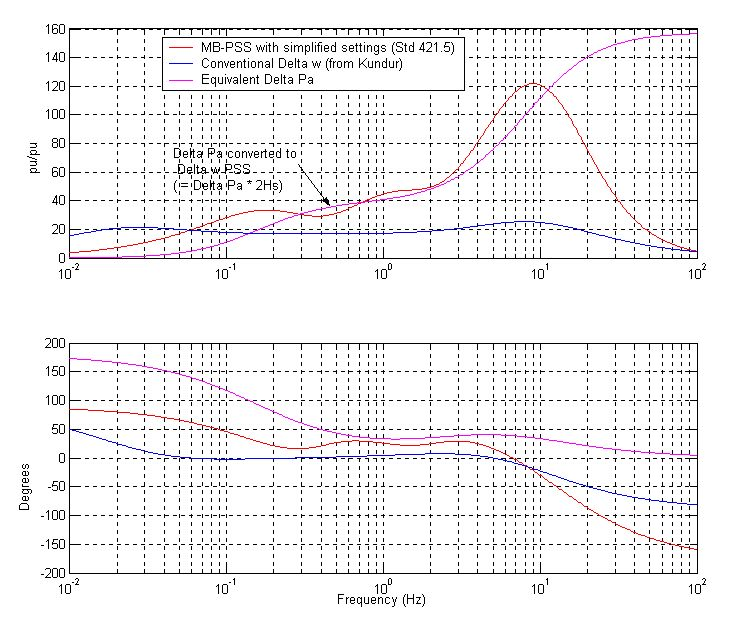
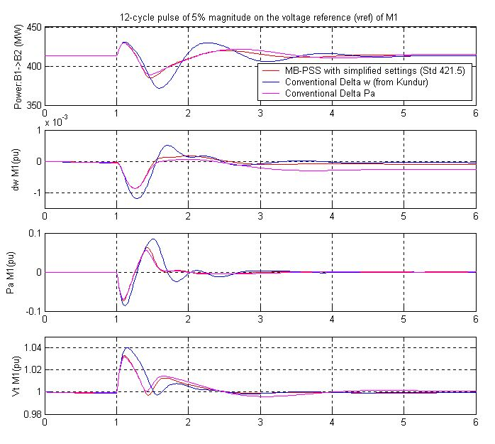
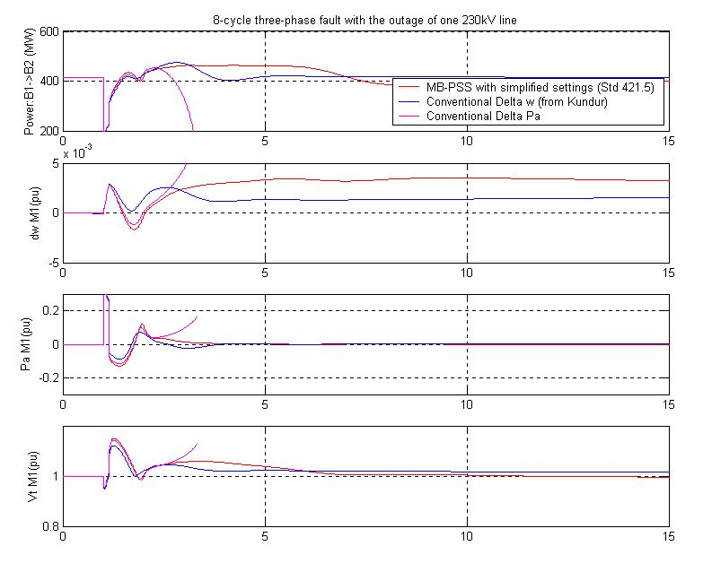

I. Kamwa (Hydro-Québec)
Three PSS are compared using the same settings for all machines:
1) MB-PSS with simplified settings: IEEE type PSS4B according to IEEE
Std 421.5
2) Conventional Delta w PSS from P. Kundur (Ref. [1], pp. 814-815,
and Ref. [2] )
3) Conventional Acceleration Power (Delta Pa) PSS
Circuit Description
The test system consists of two fully symmetrical areas linked together by two 230 kV lines of 220 km length. It was specifically designed in [1,2] to study low frequency electromechanical oscillations in large interconnected power systems. Despite its small size, it mimics very closely the behavior of typical systems in actual operation. Each area is equipped with two identical round rotor generators rated 20 kV/900 MVA. The synchronous machines have identical parameters [1,2], except for inertias which are H = 6.5s in area 1 and H = 6.175s in area 2 [1]. Thermal plants having identical speed regulators are further assumed at all locations, in addition to fast static exciters with a 200 gain [1,2]. The load is represented as constant impedances and split between the areas in such a way that area 1 is exporting 413MW to area 2. Since the surge impedance loading of a single line is about 140 MW [1], the system is somewhat stressed, even in steady-state. The reference load-flow with M2 considered the slack machine is such that all generators are producing about 700 MW each. The results can be seen by opening the Powergui and selecting Machine and Load-Flow Initialization. They are slightly different from [1], because the load voltage profile was improved (made closer to unity) by installing 187 Mvar more capacitors in each area. In addition, transmission and generation losses may vary depending on the detail level in line and generator representation.
Demonstration
1. Small-signal analysis of the systems
For an initial understanding of the network behavior, we can simulate its open-loop responses (PSSmodel = 0) to a 5%-magnitude pulse, applied for 12 cycles at the voltage reference of M1. This test is activated by opening the timer controlling the voltage reference of M1 and changing the multiplication factor of the transition times vector from 100 to 1. Similarly, the line fault should be deactivated by changing from 1 to 100 the multiplication factor of the transition times vector in the "Fault" device and line breackers "Brk1" and "Brk2". After starting the simulation, the signals responses are visualized by opening the "Machine" and "System" scopes on the main diagram. All signals show undamped oscillations leading to unstability. A modal analysis of acceleration powers of the four machines shows three dominant modes:
2. PSS Tuning
The MB-PSS settings were easily selected by varying the center frequency and gain of each band so as to achieve a nearly flat phase response beween 0.1 Hz and 5 Hz. The Delta w PSS settings are from Kundur [1], with two changes: a gain increase from 20 to 30 and the addition of a 15-ms transducer time constant. To see the frequency responses of these PSSs, click on the Show Bode Plot of the PSS icon on the main diagram.

This figure confirms that the MP-BSS phase is effectively flat around 20-40 degrees in the frequency range of interest. The Delta w PSS has an overall poor phase shape, especially around 1-2 Hz, which makes it unable to cope with faster local or intermachine modes in multi-unit power plants. By contrast, the Delta Pa PSS has a good combination of strong gain and phase advance above 0.3 Hz, although it is unpractical at low frequency where it shows a 180 deg phase advance, which actually has a destabilizing effect despite the rather small low-frequency gain. Finally, even though the low-frequency shaping of the Delta w PSS is satisfactory in overall, its DC rejection (washout) is not efficient enough, providing five time less attenuation than the MB-PSS (zoom on the magnitude plot to see this).
3. Small-Signal Performance Assessment (12-cycle pulse on voltage reference of G1)
To simulate the small-signal closed-loop system responses, the transition times vector of the breakers and fault devices on the main diagram should be disabled by multiplying it by 100 as above (section 1). Then the timer block controlling the voltage reference of M1 is activated in the same way by removing any multiplication by 100, i.e. by changing 100 to 1. Select the PSS to be simulated by setting PSSmodel = 1,2,3. Start the simulation and record the variables you want to compare latter. Most of the useful variables such as the machine speed and terminal voltage are stored in matrices W and Vt (look inside the "Machines" and "System" blocks on the main diagram for other variables.) This process was repeated for the three PSSs. To see the comparisons, double click on icon Show results: Step on vref of M1. The figure contains four plots: the top plot shows the power transfer from area 1 to 2; the second is the M1 speed, then the M1 acceleration power and the bottom plot is the M1 terminal voltage.

All PSSs do a good job stabilizing the naturally unstable system. However,
it is clear that the MB-PSS is superior to the other two PSSs, providing
significantly more damping to all modes, especially with respect to the
Delta w PSS, whose poor phase/gain shaping above 0.5 Hz highlighted above
shows all its limitations. Damping performance of the interarea-mode with
two ties: MB-PSS: (fn = 0.50Hz, z = 0.30); Delta w: (fn = 0.64Hz, z = 0.25); Delta
Pa: (fn = 0.35Hz, z = 0.30); Damping performance of the interarea-mode with
two tie: MB-PSS:
(fn = 0.40Hz, z = 0.36); Delta w: (fn = 0.43Hz, z = 0.35); Delta
Pa: (fn = 0.23Hz, z = 0.14).
4. Large Signal Performance and Robustness Assessment (8-cycle, three-phase fault with line outage)
In assessing a PSS, small-signal performance is not enough. Good performance during large perturbations and good robustness with respect to changing operating conditions are other criteria of an equal importance. The system responses to a three-phase fault cleared in 8 cycles by opening the breaker "Brk1" and "Brk2" can be simulated following the same procedure as above. Without one tie-line, the system can reach a stable operating point in steady-state, although not every PSS is able to ensure a smooth transition into this new highly stressed operating point. For comparisons, open the icon Show results: 3-phase fault.

You will see that with the Delta Pa PSS, the system lost its synchronism while the MB-PSS and the Delta W PSS succeed in maintaining stability. The latter are both very effective in damping the oscillation of the power transfer. However, the closed-loop oscillation frequency of the MB-PSS is lower while the Delta w PSS is too slow on recovering the terminal voltage: this is a bad side effect of an inefficient washout. In addition, the power acceleration is more damped with the MB-PSS than any other PSS.